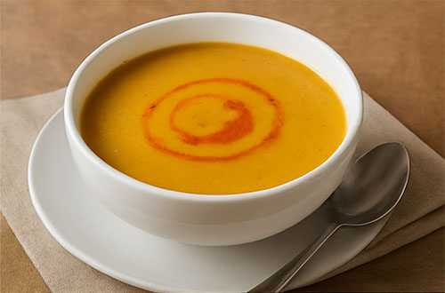
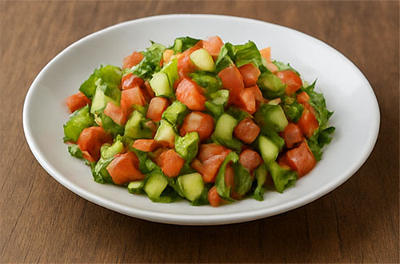
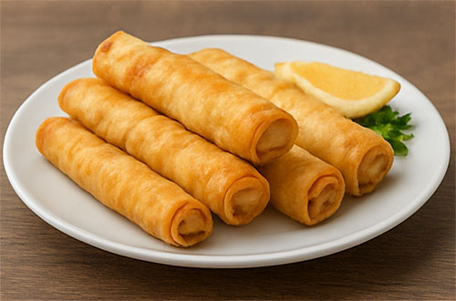
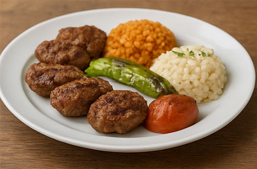
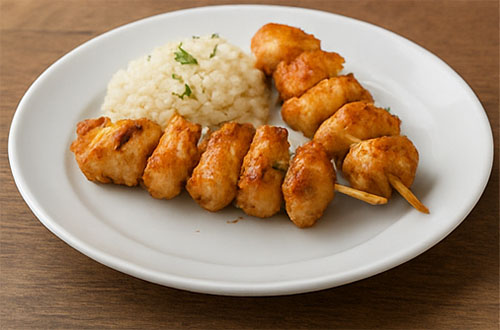
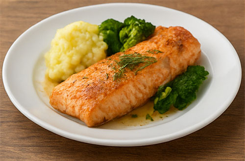
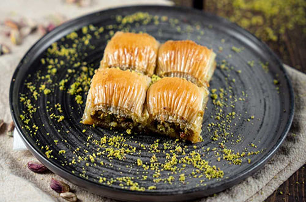
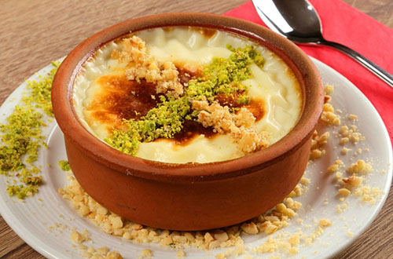
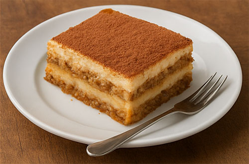

Hızlı atlama: Tatlılara Git
Başlangıçlar
-
Mercimek Çorbası

Klasik ev usulü çorba. -
Çoban Salata

Mevsim sebzeleriyle hazırlanır. -
Kalem Böreği

İncecik yufkada peynir dolgulu.
Ana Yemekler
-
Izgara Köfte — 220g köfte, garnitür ile.
 -
Tavuk Şiş — Özel marinasyonlu tavuk şiş.
 -
Fırında Somon — Limonlu ve otlu sos ile.

Tatlılar
| Sıra | Tatlı | Fiyat (TL) |
|---|---|---|
| 1 | Baklava  |
45 |
| 2 | Sütlaç  |
25 |
| 3 | Tiramisu  |
35 |